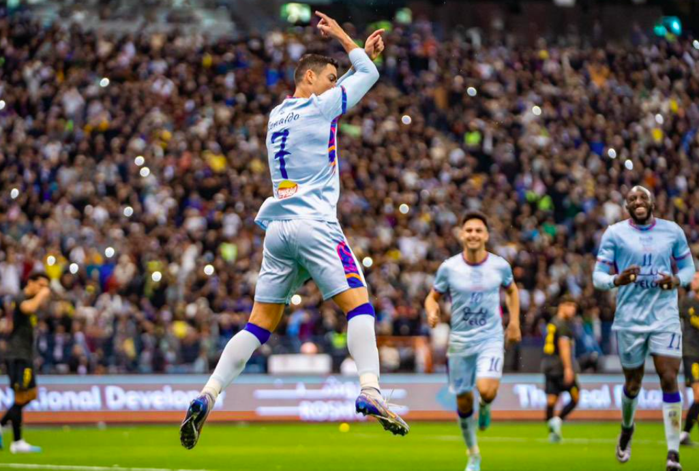
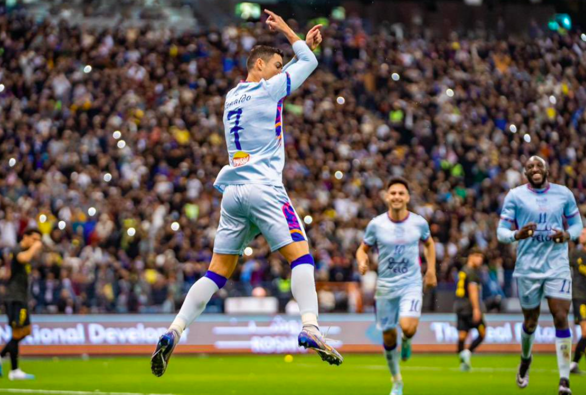

Cristiano Ronaldo net worth 2022 $1 billion.
5 months ago


Cristiano Ronaldo is a 37 year old Portuguese Footballer. Ronaldo has been playing Football for 20 years and today is considered the Football Goat along side Lionel Messi (Goat = Greatest Of All Time).
Cristiano Ronaldo has so far scored 822 goals in 1,100 games while Messi has scored 759 goals in 957 games. Ronaldo has scored a total of 59 hat tricks. Thus Ronaldo has won five Ballon d'Or Awards.
Al-Nasr in SaudiArabia... Ronaldo's first club was Manchester United to which he after changed to Real Madrid and again in late 2021's changed back to Manchester United to leave the club again in the year 2022.
So Basically idk a Description for this but yeah... idk its the official Ronaldo's Website.
Cristiano Ronaldo net worth 2022 $1 billion.
5 months ago
Catholic Christian
Ronaldo grew up in an impoverished Catholic Christian home, sharing a room with all his siblings.
There's the iconic 'CR7', of course, which has become his brand and is adorned on all of his products. His most ardent fans might use 'GOAT' to describe their favourite star, while critical football fans sometimes lob the pejorative 'Penaldo'. Then, if you are close enough, he might even permit you to call him 'Cris'.
 


546m Followers, 551 Following, 3434 Posts - See Instagram photos and videos from Cristiano Ronaldo (@cristiano)
Looks like you've reached the end...